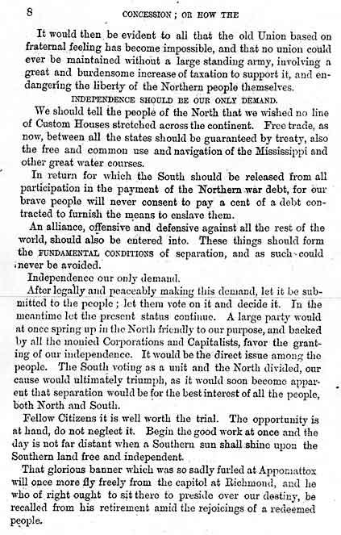

Southern Rhetoric From Planter Aristocracy During Reconstruction
Source:
Concession, or, How the Lost Cause May Be Regained and the Independence of the South Secured
The Southern Association, August 1871
[Newberry Library Call #: J 586 .189]

Back to the Beginning